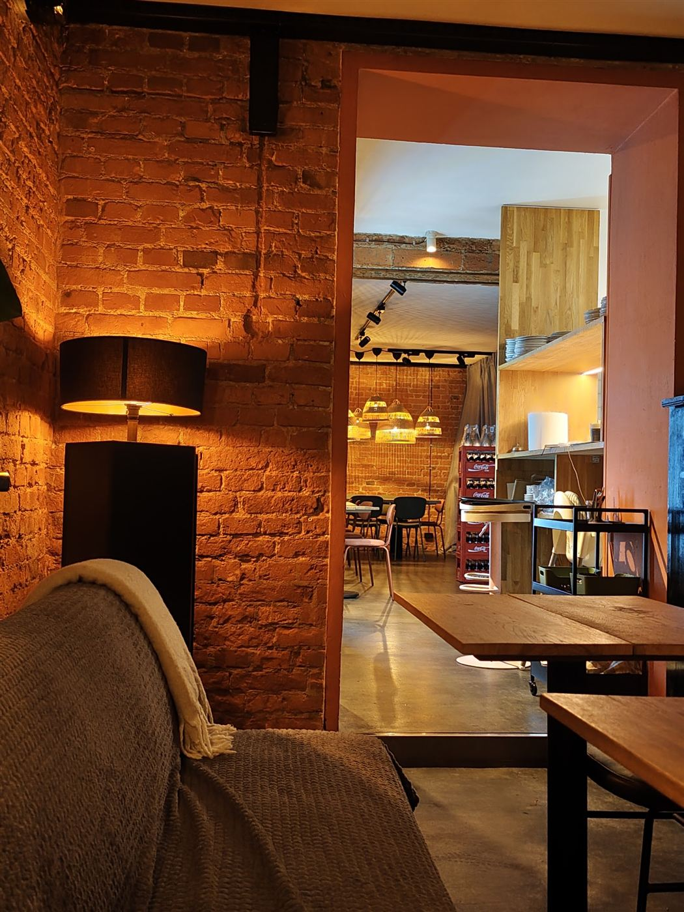
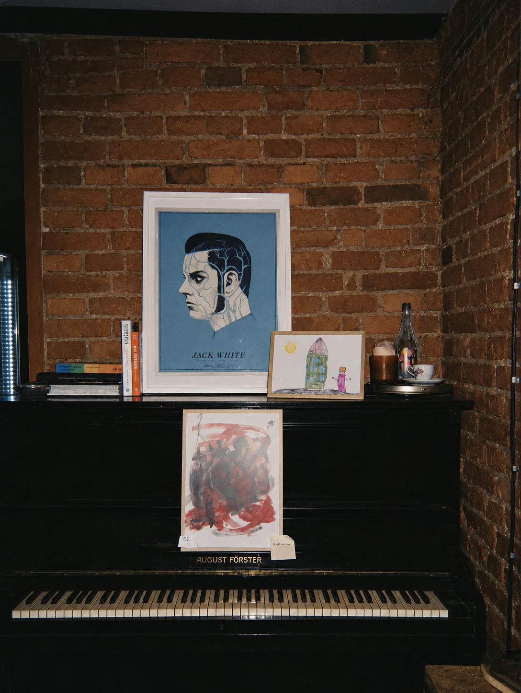
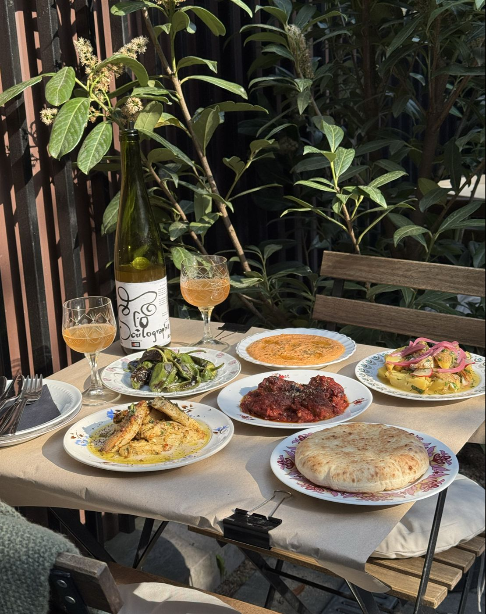
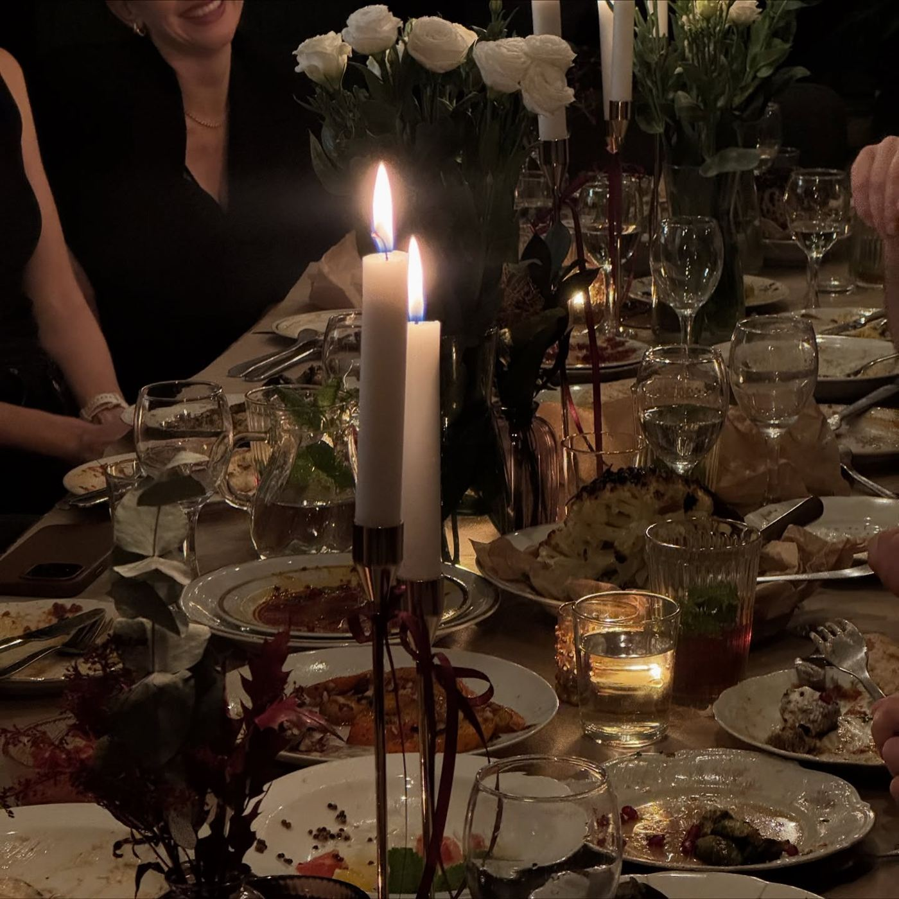
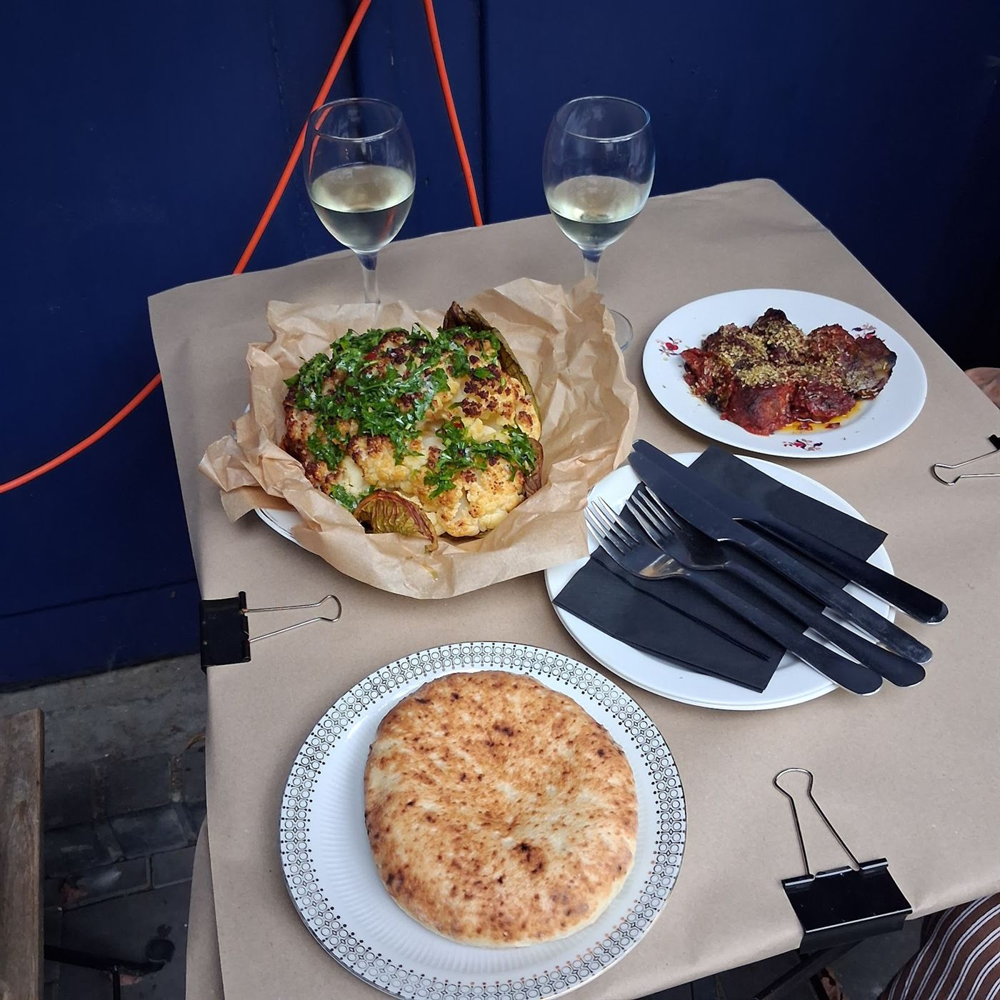
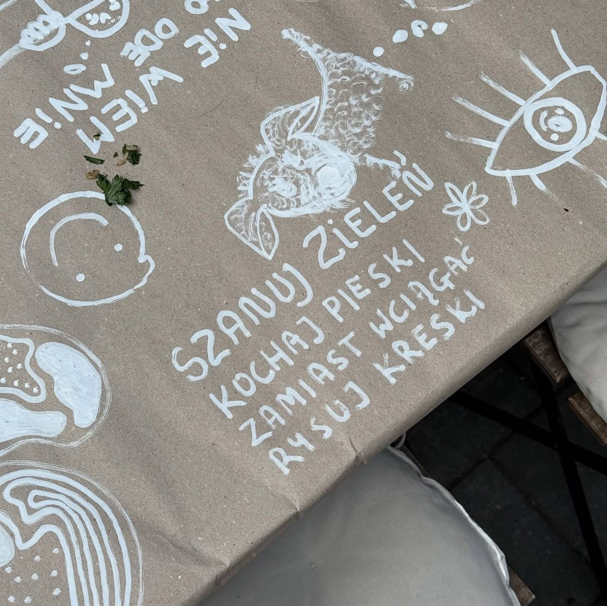
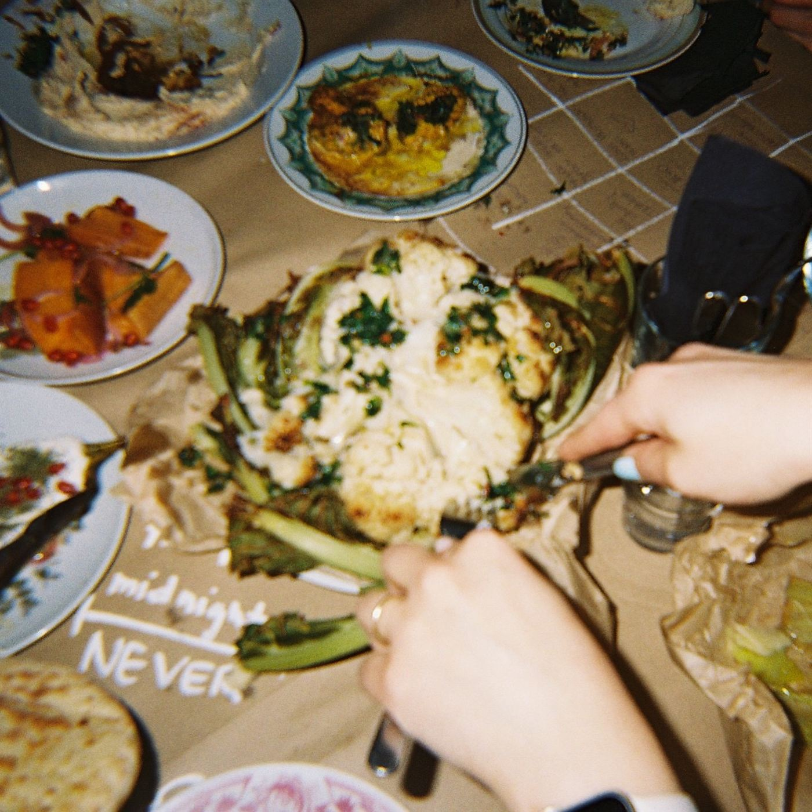
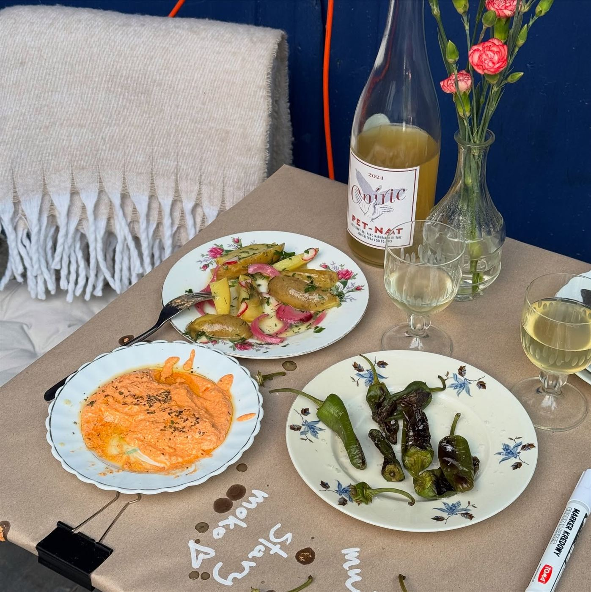

Bistro bliskowschodnie · Mokotów, ul. Willowa 9
Bez pośpiechu,
na spokojnie.
Siga siga.
„Siga siga” znaczy „powoli”. Małe talerze na środek stołu, do dzielenia się z bliskimi.
Zarezerwuj stolik
Siga Siga
- Kuchnia bliskowschodnia
- Małe talerze do dzielenia
- Raczej wege, ale nie tylko
- Śr – ndz od 13:00
Jak u nas
jest
-
Rysuj po obrusie
Obrusy są papierowe i można po nich rysować. Niżej kilka rysunków naszych gości.
Talerze do dzielenia
Wszystko podajemy na mniejszych talerzykach, do dzielenia się i wspólnego biesiadowania.
Na spokojnie
Wszystko w klimacie siga siga, czyli na spokojnie, z osobistym podejściem gospodarza.
Przy naszych stołach
-

Wino i małe talerze
-

Wieczór przy świecach
-

Papierowy obrus
Z papierowych obrusów
-

„Zamiast wciągać, rysuj kreski”
-

Rysunki między talerzami
-

Kolacja na papierze
Opinie
naszych gości
4,7 / 5
229 opinii w Google
-
Bardzo klimatyczne miejsce z bardzo smacznym jedzeniem w normalnych cenach. Uwaga! Porcje są pokaźne. Kalafior przerósł nasze oczekiwania!!!
Magdalena Z. · Google, paź 2026
-
Bardzo fajne miejsce, aktualnie w moim top 3 ulubionych sasiedzkich knajpek. Super ogródek — cicho, lampki, świeczki, kocyki, jest klimat. […] Obsługa bez nadęcia, można normalnie pogadać.
Kinga H. · Google, paź 2026
-
No jest świetnie. […] Przemiła obsługa, fajny klimat i zaskakująco sensowne ceny. Polecam!
Piotr M. · Google, lis 2026
Siga Siga
Godziny otwarcia
| Poniedziałek | zamknięte |
|---|---|
| Wtorek | zamknięte |
| Środa | 13:00 – 21:00 |
| Czwartek | 13:00 – 21:00 |
| Piątek | 13:00 – 22:00 |
| Sobota | 13:00 – 22:00 |
| Niedziela | 13:00 – 20:00 |
01 Rezerwacje: 537 880 780
02 Pytania: sigasigabistro@gmail.com
Willowa 9
- Adres
- ul. Willowa 9
00-790 Warszawa (Mokotów) - Telefon
- 537 880 780
- sigasigabistro@gmail.com
- facebook.com/sigasigabistro